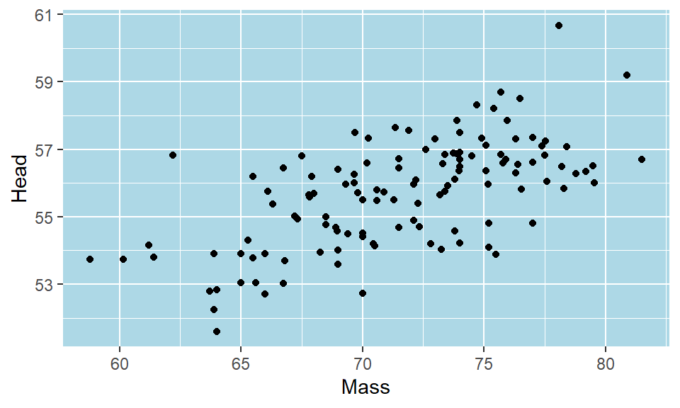

library(tidyverse)1 Introduction
This is an online guide to data visualization using the R package ggplot2. For much more information on the theory of data visualization with excellent examples, please refer to the Fundamentals of Data Visualization book by Claus Wilke. To understand the power behind ggplot2 and for more data visualization examples, see the ggplot2: Elegant Graphics for Data Analysis by Hadley Wickham.
In this chapter, I shall introduce ggplot2 to make an initial graph and how we can customize some aspects of it. Future chapters will dive into different graph types and how to customize graphs more deeply in more detail.
1.1 Introduction to ggplot2
The first thing to do when we want to make a visualization with ggplot2 is to load the tidyverse:
Next, let’s load in some data. We’ll pick the BlueJays.csv data:
df <- read_csv("data_raw/BlueJays.csv")
head(df)# A tibble: 6 x 9
BirdID KnownSex BillDepth BillWidth BillLength Head Mass Skull Sex
<chr> <chr> <dbl> <dbl> <dbl> <dbl> <dbl> <dbl> <dbl>
1 0000-00000 M 8.26 9.21 25.9 56.6 73.3 30.7 1
2 1142-05901 M 8.54 8.76 25.0 56.4 75.1 31.4 1
3 1142-05905 M 8.39 8.78 26.1 57.3 70.2 31.2 1
4 1142-05907 F 7.78 9.3 23.5 53.8 65.5 30.3 0
5 1142-05909 M 8.71 9.84 25.5 57.3 74.9 31.8 1
6 1142-05911 F 7.28 9.3 22.2 52.2 63.9 30 0In the next few steps, we’ll slowly build up a plot using ggplot2. This is not how you would typically write the code. However, it is worth going step by step, just to show you the logic behind the code.
If we just run the function ggplot() notice that all we get is a blank gray canvas. R knows that we want to make a plot, but it has no idea what type of plot or with what data - so it just throws up the canvas:
ggplot() 
Now, if we add the dataset to ggplot(), it still only gives us the blank canvas. It now knows we want to make a graph from the dataset called df but doesn’t plot anything yet as we didn’t tell it what to plot:
ggplot(df) 
For R to ‘know’ what you are trying to plot, you need to use aes(). You put that most of the time inside ggplot() after your dataframe name. (There are exceptions to this, but let’s not worry about that yet). Inside the aes() we’ll put what columns contain our data for the x and y axes. We may also refer to other columns inside aes() if we wish to modify the color or shape or something else about our data based on the values in some column.
For our first example, let’s make a scatterplot of body mass against head size of these Blue Jays. If you look at the original dataset, you’ll notice that both the Mass and Head columns contain continuous numeric data (i.e. they are numbers).
In the code below, we are telling aes() to plot the Mass data on the x-axis and to plot the Head data on the y-axis.
ggplot(df, aes(x=Mass, y=Head) ) 
Something did change this time. We get a plot with labels on the x- and y-axes. It recognizes that we wish to plot Mass and Head data. It even knows the range of our data on each axis. For instance, it knows that the Mass data lies somewhere between 55 and 85. However, we haven’t yet told it precisely what type of plot we want to make (it doesn’t just assume that we wanted to make a scatterplot - it can’t read our minds).
So our next step is to tell it to make a scatterplot by adding points to the graph. We tell ggplot() what we are adding to the chart by using different geoms. For a scatterplot, the geom we require is geom_point() - that means add datapoints. It is hard to remember all the different geoms, but you can just look them up.
Here is how we add datapoints to our graph with + geom_point().
ggplot(df, aes(x=Mass, y=Head) ) + geom_point()
That is our first ggplot graph! It looks pretty good. The amazing thing about ggplot is almost everything you are looking at on that graph can be customized to your preferred design choice. We’ll discuss several of these customizations throughout this chapter. First, let’s talk about changing the color of the datapoints. Inside of geom_point() we can change the color of all the points like this:
ggplot(df, aes(x=Mass, y=Head) ) + geom_point(color="red")
This made the points red. Just make sure you put a recognized color name (you can look them up here) or a recognized hex code. Notice though that color name must be put inside of quotes.
What if we want to color the points based on another variable? For example, instead of having all of our data points be red, say we want them to be colored based on whether the birds or male or female? The column that has the information about whether the birds are male or female is KnownSex. Because we are basing the color on a column, we put that information inside of aes() with color = KnownSex. We don’t put that inside geom_point(). This code looks like this:
ggplot(df, aes(x=Mass, y=Head, color = KnownSex) ) + geom_point() 
1.1.1 Assigning plots
When we make plots, our code can start to get quite long as we make more and more additions or changes to the plot. One very useful thing to know is that we can assign our plot to be an object, just as we would with a vector or a dataframe. For instance, let’s remake the plot above, but this time we’ll assign it the name p. We do that using p <-.
p <- ggplot(df, aes(x=Mass, y=Head, color = KnownSex) ) + geom_point() Now, whenever we type and run p we will get our plot. e.g.
p1.1.2 Titles and Axes Titles
The advantage of assigning our plots to a short name, is that we can add things with less code. In R, if we wish to add a title to a plot, we do this with + ggtitle(). So, here is how we add a title to our above plot:
p + ggtitle("Our first scatterplot")
The above plot is basically the same as writing:
ggplot(df, aes(x=Mass, y=Head, color = KnownSex) ) +
geom_point() +
ggtitle("Our First Scatterplot")You’ll notice that we are chaining together commands with the +. This is similar to how we chain together commands with the %>% when doing data carpentry. ggplot() instead chains with the +. Again, be careful not to start a row with a +, and you must end a row with a + unless it’s the very last row.
To change the title of the x-axis or the y-axis, we use xlab and ylab respectively. We can do it like this:
p + xlab("Body Mass (g)") + ylab("Head Size (mm)")1.1.3 Colors, Shapes and Sizes
R recognizes many default color names. These can be found at either of these places:
Color names 1
Color names 2
Or, you can use a hex code
Here we use the color dodgerblue to change all the points to that color:
ggplot(df, aes(x=Mass, y=Head) ) + geom_point(color="dodgerblue")
Here we change the points to the color #ababcc using a hexcode - note that hexcodes need to have # in front of them:
ggplot(df, aes(x=Mass, y=Head) ) + geom_point(color="#ababcc")
You can also change the shape of the points you plot with geom_point(pch = ). You need to insert the appropriate number according to this guide:

For example, to have dodgerblue asterisks, we add pch = 8, separating the color and shape commands by a comma:
ggplot(df, aes(x=Mass, y=Head) ) + geom_point(color="dodgerblue", pch = 8)
Finally, we can change the size of our datapoints (or other shape we choose), using size =:
ggplot(df, aes(x=Mass, y=Head) ) + geom_point(color="purple", size=2)1.1.4 Themes
Default Themes
You may have noticed that every plot we have made so far has the same gray background with faint white gridlines. This is the default setting for the look of ggplot() graphs. There are several other themes that are available to us that change the overall appearance of our plots. Some of these are listed below:
theme_bw() a variation on theme_grey() that uses a white background and thin grey grid lines.
theme_linedraw() A theme with only black lines of various widths on white backgrounds, reminiscent of a line drawing.
theme_light() similar to theme_linedraw() but with light grey lines and axes, to direct more attention towards the data.
theme_dark() the dark cousin of theme_light(), with similar line sizes but a dark background. Useful to make thin colored lines pop out.
theme_minimal() A minimalistic theme with no background annotations.
theme_classic() A classic-looking theme, with x and y axis lines and no gridlines.
theme_void() A completely empty theme
Let’s shows a couple of these different themes. The theme that we use the most in this course is theme_classic(). This is how you would apply this theme to your plot:
ggplot(df, aes(x=Mass, y=Head) ) +
geom_point() +
theme_classic()
It creates a very sleek simple graph. The downside to this type of graph is that it does get rid of the gridlines which can be helpful sometimes.
Another theme that we use often is theme_minimal(). Here is how we would add this:
ggplot(df, aes(x=Mass, y=Head) ) +
geom_point() +
theme_minimal()
This theme is also simplistic, but has gridlines too.
Custom themes
Rather than changing many different aspects of the graph at once, we can change individual things one by one with theme(). We don’t propose to cover this in more detail in this book - for more information about themes look here - however, here is one quick example.
Let’s say we wanted to make the panel background light blue instead of gray. We could do it like this:
ggplot(df, aes(x=Mass, y=Head) ) +
geom_point() +
theme(panel.background = element_rect(fill = "lightblue"))
Again, this can get quite complicated - so stick with the default themes if you want to change your plots up a bit, or go to other help guides or later chapters in this book for more fine detail on customization.